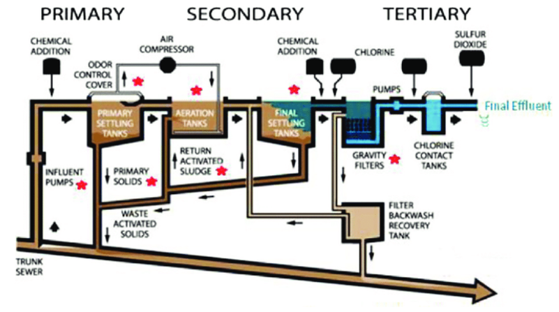

Wastewater management is a critical process that involves the collection, treatment, and disposal of wastewater, also known as sewage or effluent. Wastewater management is necessary to ensure that wastewater does not contaminate water bodies, harm the environment, or pose a health risk to humans and animals. The process of wastewater management involves various stages, including primary treatment, secondary treatment, and tertiary treatment.
In the primary treatment stage, wastewater undergoes physical treatment, such as screening, grit removal, and sedimentation, to remove large solid particles and debris. Secondary treatment involves biological treatment, such as activated sludge and trickling filters, to remove organic matter and other pollutants. Tertiary treatment involves the use of advanced treatment methods, such as disinfection, to remove any remaining pollutants.
Primary treatment of wastewater involves sedimentation of solid waste within the water. This is done after filtering out larger contaminants within the water. Wastewater is passed through several tanks and filters that separate water from contaminants. The resulting “sludge” is then fed into a digester, in which further processing takes place. This primary batch of sludge contains nearly 50% of suspended solids within wastewater.
Secondary treatment of wastewater makes use of oxidation to further purify wastewater. This can be done in one of three ways:
This third and last step in the basic wastewater management system is mostly comprised of removing phosphates and nitrates from the water supply. Substances like activates carbon and sand are among the most commonly used materials that assist in this process.
Wastewater treatment may entail a bit more than these three steps, but they are the basis of how traditional wastewater treatment facilities operate. The more you know about the process, the more ideas you’ll be able to cultivate in order to make a positive change and enhance it.
Wastewater management systems can be centralized or decentralized. Centralized systems involve the collection of wastewater from various sources, such as households, industries, and commercial buildings, into a centralized treatment plant. Decentralized systems, on the other hand, involve the treatment of wastewater at the source of generation, such as households, industries, or commercial buildings.
The benefits of effective wastewater management are numerous. Firstly, it helps to protect public health by ensuring that wastewater does not contain harmful contaminants that can cause diseases. Secondly, it helps to protect the environment by preventing the pollution of water bodies, soil, and air. Thirdly, it helps to conserve water resources by treating and reusing wastewater for non-potable purposes, such as irrigation and industrial processes. Lastly, it helps to reduce the cost of water treatment by reducing the load of pollutants that need to be removed from water sources.
Wastewater contains elements toxic to humans and the ecosystem. Wastewater treatment facilities help to purify the water and eliminate situations like what is currently seen in developing countries. Unclean water poses significant health risks, accounting for 1.7 million deaths annually, of which over 90 percent are in developing countries. Several water-related diseases, including cholera and schistosomiasis, remain widespread across many developing countries, where only a very small fraction (in some cases less than 5 percent) of domestic and urban wastewater is treated prior to its release into the environment. Wastewater treatment also protects the ecosystem. Fish and aquatic life require fresh water. When their water environment is laden with wastewater, they cannot survive. If chemicals, such as nitrogen and phosphates, enter streams, rivers or large bodies of water in excessive amounts, it causes excessive plant growth which release toxins into the water. This leads to oxygen depletion and dead zones; areas where fish and other aquatic life can no longer exist.
While Mother Nature does her best to naturally process wastewater, there is too much for her to handle. Because the global population is so large and growing, so is wastewater. Nature can’t keep up with naturally processing the excessive amounts of wastewater. And, as the population grows, so does the amounts of wastewater.
In conclusion, wastewater management is an essential process that plays a crucial role in protecting public health, the environment, and water resources. With the increasing demand for water and the growing concern for the environment, the need for effective wastewater management has become more critical than ever before. Governments, industries, and communities must work together to implement sustainable wastewater management practices that promote public health, protect the environment, and conserve water resources.